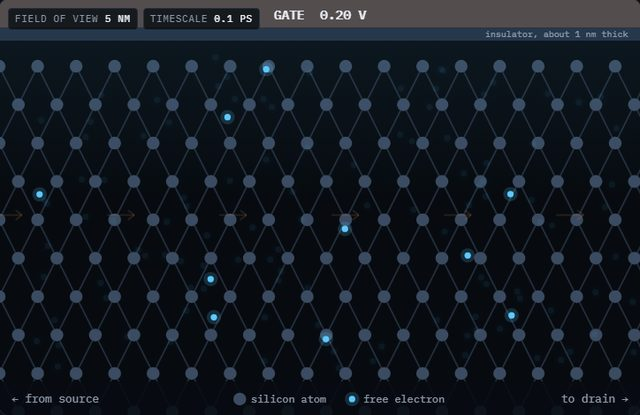

C:\TSEKO> type story.txt
Stay awhile and listen.
Storytelling reveals meaning without committing the error of defining it.
-
The bot
School kept getting in the way of an MMORPG, so I wrote a bot to play while I sat in class. That’s how I learned how computers work.

-
Competitive programming
Contests in C, where code has to be right and fast.
-
Maths competitions
The same puzzles, with a pencil.
-
University 2011 – 2015
Computing science, maths and astronomy in Glasgow. First paper at SIGIR 2014.
-
Industry, research, medicine
Mapped below. ▶ Continue?
Bulgaria
Pleven
Where it began.
2011 · Scotland
Glasgow
University, then JPMorgan Chase.
2018 · Spain
Valencia
A DevOps detour.
2019 · the Netherlands
Amsterdam
MSc, PhD, and now.